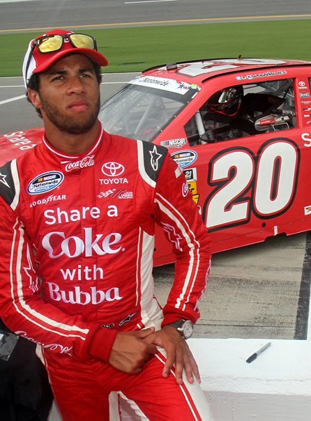

La Coca-Cola Racing Family.
Un contributo particolarmente significativo è rappresentato dalla creazione della Coca-Cola Racing Family, un progetto che riunisce alcuni dei piloti più rappresentativi della NASCAR sotto un’unica identità narrativa. Figure come Dale Earnhardt Jr. o Joey Logano sono diventate ambasciatori del brand, incarnando valori come determinazione, competitività e legame con il pubblico. Questa strategia ha permesso di costruire una continuità emotiva tra stagioni diverse, rafforzando il rapporto tra tifosi, piloti e marchio.
La forza della partnership si esprime anche nella dimensione esperienziale. Coca-Cola ha investito in modo significativo nell’attivazione durante gli eventi, creando spazi dedicati, attività interattive e iniziative pensate per rendere il pubblico parte integrante dello spettacolo. In un contesto come quello della NASCAR, dove la partecipazione dal vivo è centrale, queste strategie hanno contribuito a trasformare il consumo del prodotto in un’estensione naturale dell’esperienza sportiva.
